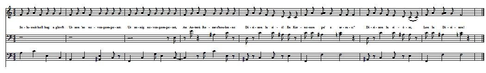
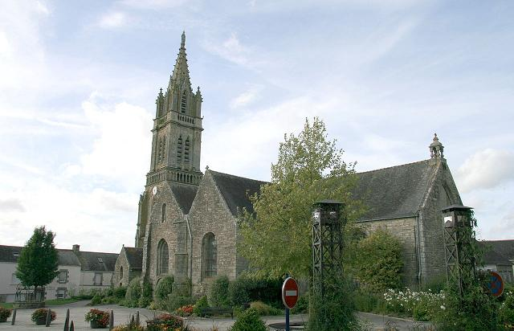

|
Pas de mélodie connue. Remplacée ici par un "plinn ton simpl". Pour le chant correspondant, dans Sonioù II, Luzel, détaille la façon dont se chante la première strophe: "Selaouit holl hag a glevfet Ur zon 'zo nevez-gompozet: Ur zonig nevez-gompozet, An Aotroù Rozar a c'houlenne Dirizon la rié! En Kernenon pa' z arrue:" Dirizon la rière, Lon la Dirizon!" Cette structure pourrait convenir à cette mélodie (cf. figure ci-après) |
No tune known. Replaced here by a dancing air "Plinn ton simpl". For the song corresponding with the ditty at hand, in his "Sonioù, Second Book", Luzel, gives an accurate account of how the first stanza was sung to him: "Selaouit holl hag a glevfet Ur zon 'zo nevez-gompozet: Ur zonig nevez-gompozet, An Aotroù Rozar a c'houlenne Dirizon la rié! En Kernenon pa' z arrue:" Dirizon la rière, Lon la Dirizon!" This structure could tally with the tune chosen (see below figure). |


|
BREZHONEK BREVELE [1] p. 124 1. Me garfe boud ur goulmik wenn Ker abil diwar ar blaenenn Me a welfe ar benn-herez Dre ar jardin ober al laez. 2. Triwec'h tudjentil eus ar vro Zo aet d'he gweled war an dro. Ne blije nikun dezhi anezhe Nemed an Aotroù Brevele. 3. - Aotroù Brevele, deuit d'am zi! Lakait ho marc'h d'ar marchosi; Roit foen mar c'harit dezhañ da zebriñ, Ha deuit d'an ti da zijuniñ! 4. - E-barzh an ti me n'ez in. Va marc'h er marchosi na lakin Ken bo gouiet va c'hefridi. 5. Pennherez, godiserez oc'h. An holl dud a lar din-me 'z oc'h Va marc'h er marchosi na lakin Ken bo gouiet va c'hefridi. 6. - Aotroù Brevele, larit din-me, Pegement renchoù a douchit? p. 125 7. - Triwec'h mil livr arc'hant ha seizh A douch va zud e Goueled-Breizh. Triwec'h mil livr trok-ha-trok Ha kemend-all pezh aour logod. 8. Ha kemend-all e Normandi. - Aotroù Brevele, deuit en ti! 9. Me 'meus un inkane glas, Biskoazh yeoten ne beuras Nemed lann-bil ha radenn glas. 10. Pa ya an aotroù warnezhi A gren an douar dindani 11. Me 'm eus un ti en ar Bourdel A zo warnañ triwec'h tourell Ha triwec'h gambr ha triwec'h zall. 12. Ha triwec'h gwele ha kourtin Ha triwec'h oaled d'ober tan Evit degemer ar priñsed. 13. Mar zo penn-herez er c'hontre, A varcha ker kent ha me. Ha mar za daou bas, n'eo ket tri: Me varcha sur kerkent hag hi! 14. Nemed penn-herez Pontarpav Mar marcha un pas, n'eo ket daou, Mar vo unan, ne vo ket daou! 15. Nemed penn-herez Koadarfav, Nemed penn-herez Pontarglav. [2] 16. - Me 'm eus un ti hag ul liorz Hag ur feunteun e-kreiz ar porzh. Mar beuzfemp, plac'h, ne refen forzh. 17. M'am-eus ur veil e-kreiz ar stank He-deus he rodoù en olifant. 18. Me 'm eus un all war ar menez, A vala gwiniz d'ar roue. 19. Ha mar am-be ur vengleuz aour, Defaot ur plac'h, me a zo paour. |
TRADUCTION FRANCAISE BREVELAY [1] p. 124 1. Je voudrais être tourterelle Sur la plaine, battant des ailes, Je verrais l'héritière au loin Et ses soupirants au jardin. 2. Dix-huit gentilshommes d'ici Vinrent la voir, à ce qu'on dit. Mais le seul qu'elle ait remarqué Ce fut Monsieur de Brévelay. 3. - Seigneur, mettez donc, je vous prie! Votre cheval à l'écurie; S'il a faim, donnez-lui du foin. Entrez! Vous déjeunerez bien! 4. - Non, chez vous je n'entrerai pas. Et mon cheval restera là. Sachez d'abord ce qui m'amène. 5. On vous dit moqueuse, héritière Et tous ici me l'assurèrent Mon cheval attendra tant que Vous ne saurez ce que je veux. 6. - Seigneur, une question me hante: Combien donc touchez-vous de rentes? p. 125 7. - Dix-huit mille livres d'argent Et sept, du fait de mes parents, Cela pour la Basse Bretagne. Autant en pièces d'or d'Espagne . 8. Qui me viennent de Normandie. - Seigneur, entrez donc, je vous prie: 9. Je possède une jument verte, - Jamais elle ne brouta certes Que la fougère et l'ajonc ras - 10. Qui, menée d'une main experte Fait trembler le sol sous ses pas. 11. Et je possède un beau château Avec dix-huit tours, à Bordeaux, Dix-huit chambres et dix-huit salles. 12. Avec dix-huit lits à rideaux Et dix-huit âtres et fourneaux D'un roi la demeure idéale. 13. Aucune héritière alentour, Pour me précèder à la cour De plus de deux pas. Trois, jamais! J'eusse tôt fait de la rattraper! 14. L'héritière de Pontampaou Me précède d'un pas, c'est tout, Je dis bien d'un pas, non de deux! 15. Celle aussi de Coatanfaou, Ou bien celle de Ponteglaou. [2] 16. - Moi, ma maison, dans son jardin, Il y a, la fille, un bassin: Noyons-nous y, la belle histoire! 17. J'ai, sur un étang, un moulin La roue qui tourne est en ivoire, 18. Sur la montagne, un autre encor: Il moud du froment pour le roi. 19. Si j'avais une mine d'or, Je n'aurais rien, ne t'ayant pas. - Traduction: Christian Souchon (c) 2014 |
ENGLISH TRANSLATION BREVELAY [1] p. 124 1. I wish I were a white dove, high Up over the plain in the sky! I could see the heiress and knew Who entered her garden to woo. 2. Sixteen gentlemen from these parts Came in turn and offered their hearts. No one pleased her in any way No one, except Lord Brevelay. 3. - Lord Brevelay, come in, of course! Into the stable put your horse; Give it hay, if it is hungry, And come in to have lunch with me! 4. - I shall not sit at your table, Nor put my horse in your stable, If you have not heard my errand. 5. Heiress, of scoffing you are fond, Shun entering into a bond. So my horse your stable will shun, As long my errand is not done. 6. - Lord, to prevent ambiguity, How much is your annuity? p. 125 7. - Sixteen thousand and seven pounds From my Lower-Brittany grounds. Sixteen thousand pounds of silver And as much in gold, moreover, 8. From my estates in Normandy. - Lord Brevelay, you're a match to me! 9. Because I have a grey charger, That won't feed on any fodder But pounded gorse and bracken green. 10. And it is, when mounted, so keen That earth quakes under its footfalls. 11. I have in Bordeaux a fortress With eighteen towers, quite gorgeous, With eighteen chambers, eighteen halls, 12. And eighteen beds with canopies And, to make fire, eighteen chimneys. Princes feel at home in these walls. 13. And if there's an heiresses around, To whom I am bound to give ground I'll stand back two steps and not three: And I shall walk as fast as she! 14. Heiress Pont-ar-Paou for instance Has one step only precedence, When I say one step, it's not two! 15. And the heiress Koad-ar-Faou, As well as heiress Pont-ar-Glaou. [2] 16. - I have a mansion, for my part, With a fountain amidst the yard. If we drown there, lass, I don't care. 17. My mill on the shore of the pound With ivory wheel, it goes round. 18. My mill on top of the mountain, It grinds for the king wheat and grain... 19. Even if I had a gold mine, I were poor, were my lass not mine! - Translation: Christian Souchon (c) 2014 |
|
Bibliographie: Recueils: - Luzel, Sonioù II Pennherès Kernenon (Duault) Allietic Ar Palaffre (Duault) [1] La chanson, l'"Héritière de Kernenon" collectée par Luzel, ressemble à celle notée par La Villemarqué (chant amébée avec surenchère de richesses chimériques), si ce n'est qu'on apprend que la principale concurrente de l'héritière, en matière de préséance, ne peut que marcher derrière elle du fait qu'elle est enceinte d'un paysan: "Il ny a héritière en ce pays/Qui marche dun pas avant moi, Si ce nest celle de Kerdadraon/Et c'est dun pas, et non de deux. Si c'est de deux, non de trois:/Je marcherai aussi vite quelle. Et si c'est de trois, non de quatre/Car on lui a rempli son panier. On lui a rempli son panier/Au rebours de celui d un colporteur: Le colporteur porte sur son dos/ Lhéritière porte par devant. Un paysan de la campagne/ A dun fardeau chargé lhéritière." C'est peut-être l'explication, de la conduite bizarre de l'héritière: elle veut éviter une déconvenue semblable à celle subie par sa concurrente, en plaçant très haut la barre des exigences en matière de fortune et de revenus! "Aliette Le Paléfré" est d'une tonalité différente. Seul le noble prétendant se vante auprès de la jeune fille, qu'une rumeur disait mariée, de ses dix-huit moulins, de ses fenêtres en or, de ses portes en argent et de ses cinq mille écus de rente annuelle. Aliette quant à elle, n'a qu'un frère clerc à mettre en balance avec toutes ces richesses. Elle s'inquiète de la réaction de la famille du jeune homme, s'il épouse une roturière dont, assure-t-elle, il adoptera la condition: "votre père fera esclandre,/ Quand il verra son fils payer la taille, Sagenouiller à léglise, tout en bas/ Vous qui êtes issu de race haute." Elle finit néanmoins par l'agréer comme fiancé et comme mari. Nous avons déjà rencontré le nom de Kernenon à propos du chant Le pardon du Yaudet. [2] Contrairement à celle de la chanson trégoroise "Aliedic" (une Kerdadraon), les concurrentes de l'héritière dans la version cornouaillaise de La Villemarqué, pour signaler qu'il s'agit d'inventions, portent toutes des noms de fantaisie en "aou" (qui signifient "Pont-de-la-Patte", "Bois-de-Hêtre" et Pont-de-la-Pluie"). |
Bibliography: Collections: Pennherès Kernenon (Duault) Allietic Ar Palaffre (Duault) [1] The song, the "Heiress of Kernenon", collected by Luzel, resembles the song recorded by La Villemarqué, (it is an alternate poem with protagonists overbidding each other with their fancy riches), but for the conclusion stating that the heiress' main competitor, as far as precedence is concerned, is sent to walk behind her, since she is pregnant by a peasant: "No heiress around here/Walks one step ahead of me, Except that of Kerdadraon/But mind, one step, not two. Or, if two steps, not three:/I shall walk as fast as she does. If three steps ahead, not four/Because her basket was filled. Because her basket was filled/The other way as is the hawker's: The hawker carries his on his back/ And the heiress in front. A peasant, aye, a country boy/ Loaded the heiress with a heavy burden." This may account for the heiress' weird conduct: she is bent on preventing for herself the same disappointment as was experienced by her competitor, by requiring from her suitor very high income and fortune standards! "Aliette Le Paléfré" pitches another note. Only the aristocratic suitor boasts in presence of the allegedly married girl, his eighteen mills, his gold windows and silver doors and his five thousand crown yearly income. Aliette has but a brother clerk to offset all this wealth. She feels concerned about his family's reaction when they hear that he is to marry a commoner, whose station he is about to adopt, so she says: "Your father will be upset,/ When he'll see his son paying tallage, Kneeling in church in the back pews/ Though you are of high lineage." She nevertheless accepts him, eventually, as her affianced husband. We already came across the name "Kernenon" in connection with the song Le Yaudet Pardon. [2] Unlike in the Tréguier area song "Aliedic" (mentioning the genuine name "Kerdadraon"), all the girls who vie with the heiress, in the Quimper area version gathered by La Villemarqué, have fancy names ending in "aou" (meaning, respectively "Paw-Bridge", "Beech-Wood" and "Rainsbridge"), that are as surreal as the persons to whom they refer. |